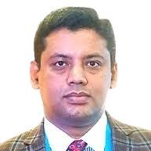
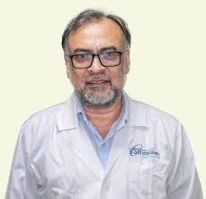
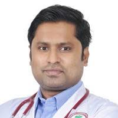

MBBS (DMC), BCS (Health), FCPS (Surgery), MS (Orthopedic Surgery, NITOR)
Trained in Orthopedics (Japan)
Orthopedic (Bone, Joint, Arthritis, Spine, Arthroscopy, Arthroplasty) Specialist & Surgeon
Assistant Professor, Department of Orthopedic Surgery
Shaheed Suhrawardy Medical College & Hospital
Medinova Medical Services, Malibagh
Address: Gimcon Tower, 255, New Circular Road, Malibagh, Dhaka
Visiting Hour: 7.30pm to 9.30pm (Closed: Tues & Friday)
Appointment: 01727-041923, 01790-118866

MBBS, MS (ORTHO), FACS (USA), AO Spine BASIC (India), Advance AO Spine Course (SG, MY)
AO Trauma BASIC (Inida), AO Trauma Advance (BD), Arthroplasty BASIC (India)
Arthroplasty, Trauma & Spine Surgery Specialist
Associate Professor, Orthopedic Surgery
National Institute of Traumatology & Orthopedic Rehabilitation
attachment Manikganj Medical College & Hospital
Aurora Specialized Hospital
Address: 19/01, Kakrail, Dhaka (Opposite of Karnaphuli Garden City)
Visiting Hour: 7pm to 10pm (Everyday)
Appointment: +8801404450401, +8809610989998

MBBS, BCS (Health), MS (Ortho-NITOR), FACS (America), FICS (America)
AO Trauma Basic & Advance (India), AO Spine Basic (India)
Special Trained in Arthroscopy & Arthroplasty (India & Nepal), Special Trained in Pelvis & Acetabulum (India)
Life member of APOA (Malaysia), Member of AO Spine (Switzerland), Member of SICOT (Belgium)
Spine, Arthroscopic, Trauma and Orthopedic Surgeon
National Institute of Traumatology & Orthopedic Rehabilitation
Ibn Sina Diagnostic Center, Dhanmondi
Address: House # 48, Road # 9/A, Dhanmondi, Dhaka - 1209
Visiting Hour: 5pm to 9pm (Sat, Mon & Wed), 10Am to 12pm & 5pm to 8pm (Friday)
Appointment: 01300907559, 01831153871
Ibn Sina Diagnostic Center, Savar
Address: 31/6 Jaleshwar, Aricha Road, Savar, Dhaka – 1340
Visiting Hour: 5pm to 8pm (Sun, Tue & Thu)
Appointment: 01300907559, 01831153871